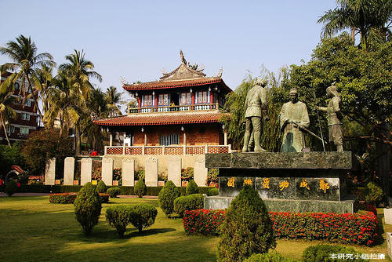
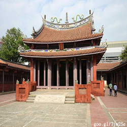
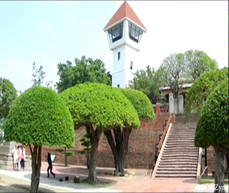
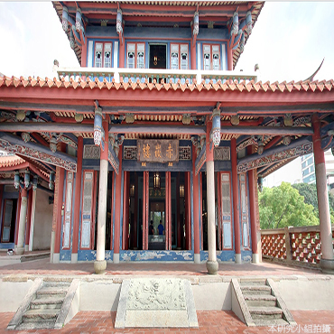
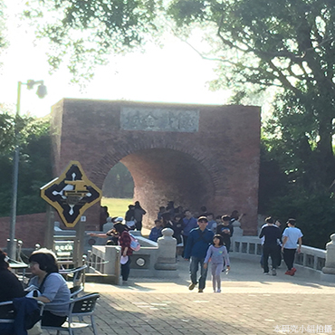
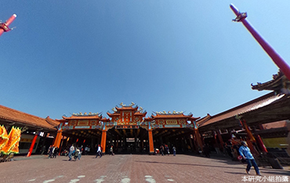
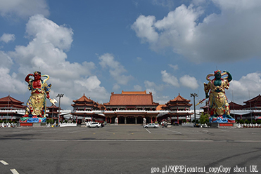
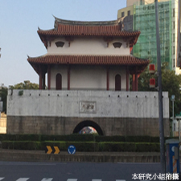
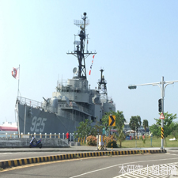
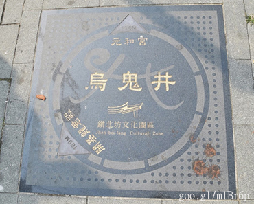

人文特色
|  |  |  |
| 台南孔子廟
|
安平古堡 | 赤崁樓 |
| 臺南孔子廟，是台灣本島最早成立的孔廟，位於臺南市中西區，建於明鄭永曆十九年，是臺灣最早的文廟。清領初期一度是全臺童生入學之所，因此稱全臺首學。 臺南孔廟建築莊嚴宏偉，氣氛肅穆，格局完整，廟旁蒼鬱的古樹，抒發引人思古之幽情。於民國七十二年12月28日，公告為祠廟類國家一級古蹟，現為國定古蹟。 資料來源:goo.gl/Sq5rCH |
安平古堡，又稱熱蘭遮城、安平城、臺灣城，是一座曾經存在於臺灣臺南市的堡壘。最初建於1624年，是臺灣最早的要塞建築。自建城以來，曾是荷蘭人統治臺灣的中樞，也曾是鄭氏王朝統治者的住處。 安平古堡有兩處遺跡被列為國定古蹟：「台灣城殘蹟」及「熱蘭遮城城垣暨城內建築遺構」。 資料來源:goo.gl/u4w8EO |
赤崁樓，位於臺灣臺南市的中西區。前身為1653年荷治時期興建之歐式建築普羅民遮城，紅毛樓，在地人稱為番仔樓，曾為全島統治中心，至清代已傾圮，僅留部分殘蹟。今日所見的赤崁樓，大部分是漢人在荷蘭城堡之上，陸續興建的儒、道教廟祠，包括海神廟、文昌閣。 資料來源:Goo.gl/ivP2ek |
|  |
 |  |
| 億載金城 |
南鯤鯓代天府 |
正統鹿耳門聖母廟 |
| 二鯤鯓砲臺，舊稱安平大砲臺，現在一般俗稱為億載金城，是一座清朝時建立的砲臺。佔地三公頃，由法國工程師設計，建築材料據說除了購自中國廈門、泉州等地，還挪用當時已頃圻的熱蘭遮城牆磚。形制上，屬於稜堡式的方形砲台，四邊內凹，以洋槍防守近攻，四角凸出，放置大砲，以利遠攻，中央為操練場，砲台四周並築有護城濠。位於臺灣臺南市安平區，為中華民國文化部所管轄的國定古蹟。
資料來源:goo.gl/OhQPje |
南鯤鯓代天府，位於臺灣南部的臺南市之西北方，居榔山之虎峰。主祀代天巡狩五府千歲，民間尊稱鯤鯓王，為臺灣最具有規模壯觀的廟宇建築之一、最古老的五府千歲的全國信仰中心，更有臺灣王爺總廟之尊稱。俗稱南鯤鯓王爺廟、南鯤鯓王爺宮。與歸仁保西代天府、佳里金唐殿，稱為南瀛三大代天府。 |
正統鹿耳門聖母廟位於台南市安南區城安路上，是一座主祀天上聖母的廟宇當地土城社區的信仰中心。仿北京紫禁城宮殿式建築，南北四進三落五殿，建坪二萬餘坪，享有遠東第一大廟宇之譽。創建於西元1641年，至今已有將近四百年的歷史，廟前左側有兩塊清朝時府城三郊所立的『鹿耳門聖母廟界碑』，訴說媽祖宮繁華興盛的昔日景況。 資料來源:goo.gl/KixWPX |
|  |  |  |
| 台南府城大東門 |
德陽艦軍艦博物館 | 烏鬼井 |
| 迎春門，又稱臺灣府城大東門，是清朝臺灣府城的14座城門之一，位於東門路與勝利路交叉口，為中華民國直轄市定古蹟。臺灣現存最具規模的城樓。為長條型花崗岩堆砌而成，西側拱門上銘刻著「迎春門」，東側有石質橫額一塊題「東安門」。大東門為三級古蹟，建於雍正3年（1725年），至今已有290年的歷史。作為臺灣府城的大東門，迎春門是臺灣郡城東向的交通孔道，位於城垣的東南緣，城樓高大。資料來源:goo.gl/4mKQnF | 德陽艦，原為美軍驅逐艦，曾參與韓戰與越戰，在越戰時曾獲得戰星獎章。1977/10/1移交我國，命名「德陽」(德披天下、陽照寰宇)，執行海峽偵巡、外島運補護航、護漁，及各項演訓等任務。2005/4/1除役，2009/1/22正式停泊於安平港口成為全國首座除役軍艦再利用的景點。2011/4/30正式對外開放參觀，讓前來參觀之遊客近距離體驗軍艦雄威，並有結合觀光、國防教育與認識海洋的三重意義。 資料來源:goo.gl/yiKP70 |
烏鬼井位於臺南市北區，為三級古蹟。據說是荷蘭東印度公司命令印尼班達島土人所蓋，而因為班達島土人膚色黝黑又頗識水性，遂被稱作「烏鬼」，井名也因此而來。烏鬼其實就是黑奴，東南亞的人，通常被用來開闢荒地或當奴隸使用。所以，烏鬼井的書意可說是烏鬼開鑿的井或烏鬼使用的井。根據王必昌《重修臺灣縣志》雜記志的古蹟編說到:「紅毛命烏鬼鑿井」，因此，臺南烏鬼井即是荷蘭人命黑奴們所開鑿而做為飲用的井。 資料來源:goo.gl/JJJPuf |